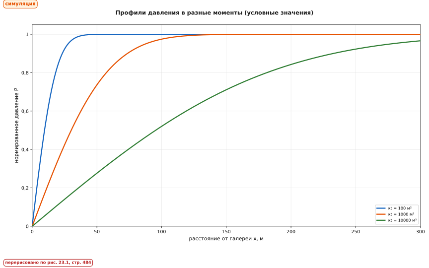

Стр. 483 · 5.1. Прямолинейно-параллельный фильтрационный поток упругой жидкости
Интеграл (23.26) называется интегралом вероятности, является табулированной функцией, изменяющейся в пределах от 0 до 1 и имеет специальное обозначение
Неустановившееся движение упругой жидкости в упругом пласте. Метод ПСССШаг 21 из 60
В книге: «Прямолинейно-параллельный фильтрационный поток упругой жидкости» стр. 483–484
Опирается на: шаг 20 «Границы задают масштаб профиля» (предпосылка)
Нормированный профиль давления — это функция ошибок erf от автомодельной координаты.
Давление в пласте равно давлению галереи плюс перепад, умноженный на erf.
Со временем зона пониженного давления уходит всё дальше от галереи.
Определите, где наблюдение, вывод или допущение. Раскройте утверждение, чтобы свериться с ответом и цитатой.
Наблюдение · стр. 483
«Интеграл (23.26) называется интегралом вероятности, является табулированной функцией, изменяющейся в пределах от 0 до 1 и имеет специальное обозначение»
Наблюдение · стр. 483
«Интеграл (23.26) называется интегралом вероятности, является табулированной функцией, изменяющейся в пределах от 0 до 1 и имеет специальное обозначение»
Наблюдение · стр. 483
«Интеграл (23.26) называется интегралом вероятности, является табулированной функцией, изменяющейся в пределах от 0 до 1 и имеет специальное обозначение»
Наблюдение · стр. 484
«$$\frac{2}{\sqrt{\pi}} \int_0^{\frac{x}{2\sqrt{\kappa t}}} e^{-u^2} du = \operatorname{erf}\left(\frac{x}{2\sqrt{\kappa t}}\right).$$»
Вывод · стр. 484
«Таким образом, $P = \operatorname{erf}\left(\frac{x}{2\sqrt{\kappa t}}\right)$, и закон распределения давления в неустановившемся прямолинейно-параллельном фильтрационном потоке упругой жидкости имеет вид»
Вывод · стр. 484
«$$p = p_{\mathrm{r}} + (p_{\mathrm{k}} - p_{\mathrm{r}}) \operatorname{erf}\left(\frac{x}{2\sqrt{\kappa t}}\right). \quad (23.27)$$»
Наблюдение · стр. 484
«Типичные кривые распределения давления в различные моменты времени в неустановившемся прямолинейно-параллельном потоке упругой жидкости в галерее, пущенной в эксплуатацию с постоянным забойным давлением $p_{\mathrm{r}} = \text{const}$, приведены на рис. 23.1.»
Наблюдение · стр. 484
«Рис. 23.1. Кривые распределения давления в различные моменты времени в неустановившемся прямолинейно-параллельном потоке упругой жидкости при условии $p_{\mathrm{r}} = \text{const}$»
Нормированный интеграл называют интегралом вероятности. стр. 483
«Интеграл (23.26) называется интегралом вероятности, является табулированной функцией, изменяющейся в пределах от 0 до 1 и имеет специальное обозначение»
Его значения табулированы — их берут из таблиц. стр. 483
«Интеграл (23.26) называется интегралом вероятности, является табулированной функцией, изменяющейся в пределах от 0 до 1 и имеет специальное обозначение»
В этой задаче функция меняется от нуля до единицы. стр. 483
«Интеграл (23.26) называется интегралом вероятности, является табулированной функцией, изменяющейся в пределах от 0 до 1 и имеет специальное обозначение»
Функция ошибок erf — нормированный интеграл до аргумента, равного автомодельной координате. стр. 484
«$$\frac{2}{\sqrt{\pi}} \int_0^{\frac{x}{2\sqrt{\kappa t}}} e^{-u^2} du = \operatorname{erf}\left(\frac{x}{2\sqrt{\kappa t}}\right).$$»
Нормированное давление равно функции ошибок от автомодельного аргумента. стр. 484
«Таким образом, $P = \operatorname{erf}\left(\frac{x}{2\sqrt{\kappa t}}\right)$, и закон распределения давления в неустановившемся прямолинейно-параллельном фильтрационном потоке упругой жидкости имеет вид»
Давление в физических единицах равно давлению галереи плюс начальный перепад, умноженный на erf. Начальное давление вдали называют контурным. стр. 484
«$$p = p_{\mathrm{r}} + (p_{\mathrm{k}} - p_{\mathrm{r}}) \operatorname{erf}\left(\frac{x}{2\sqrt{\kappa t}}\right). \quad (23.27)$$»
На рис. 23.1 показаны профили в разные моменты времени. Забойное давление при этом постоянно. стр. 484
«Типичные кривые распределения давления в различные моменты времени в неустановившемся прямолинейно-параллельном потоке упругой жидкости в галерее, пущенной в эксплуатацию с постоянным забойным давлением $p_{\mathrm{r}} = \text{const}$, приведены на рис. 23.1.»
Рисунок сравнивает распределения давления в одном режиме работы галереи. стр. 484
«Рис. 23.1. Кривые распределения давления в различные моменты времени в неустановившемся прямолинейно-параллельном потоке упругой жидкости при условии $p_{\mathrm{r}} = \text{const}$»
В фиксированной точке рост времени уменьшает аргумент erf. Поэтому давление там снижается, хотя на самой галерее оно постоянно. стр. 484

Как рассчитать давление в точке
Определение функции ошибок в автомодельной координате. стр. 484
| Обозначение | Что это | Единицы |
|---|---|---|
| $\pi$ | число пи | безразмерно |
| $x$ | расстояние от галереи | м |
| $\kappa$ | коэффициент пьезопроводности | м²/с |
| $t$ | время от пуска | с |
| $v$ | переменная интегрирования в функции ошибок | безразмерно |
| $e$ | основание натурального логарифма | безразмерно |
Безразмерный профиль давления. стр. 484
| Обозначение | Что это | Единицы |
|---|---|---|
| $P$ | безразмерное давление | безразмерно |
| $x$ | расстояние от галереи | м |
| $\kappa$ | коэффициент пьезопроводности | м²/с |
| $t$ | время от пуска | с |
Размерный профиль давления. стр. 484
| Обозначение | Что это | Единицы |
|---|---|---|
| $p$ | давление жидкости в пласте | Па |
| $p_{\mathrm{k}}$ | начальное и контурное давление | Па |
| $p_{\mathrm{r}}$ | давление галереи | Па |
| $x$ | расстояние от галереи | м |
| $\kappa$ | коэффициент пьезопроводности | м²/с |
| $t$ | время от пуска | с |
Профили можно строить и сравнивать на разных временах по одному аналитическому выражению.
Одна нормированная функция используется как шаблон для семейства графиков.
Где аналогия перестаёт работать: Масштаб оси и оба опорных давления имеют физический смысл и не подгоняются только ради совпадения линий.
В расчётном модуле используют библиотечную функцию ошибок вместо ручного поиска в таблице, проверяя значения у галереи и на удалении.
При фиксированном расстоянии большее время уменьшает аргумент функции ошибок. Поэтому при положительном перепаде давление в этой точке снижается по мере отбора, хотя давление самой галереи остаётся фиксированным.
Верный ответ: Давлению галереи плюс перепад, умноженный на erf
Это формула автора для размерного профиля. Где это в тексте (стр. 484) →
Верный ответ: Её значения табулированы; Она меняется от нуля до единицы; Она равна нормированному давлению
В фиксированной точке рост времени уменьшает аргумент, и erf убывает. Где это в тексте (стр. 483) →
Все утверждения шага с дословной цитатой автора и страницей книги (по PDF).
Нормированный интеграл называется интегралом вероятности. наблюдение
«Интеграл (23.26) называется интегралом вероятности, является табулированной функцией, изменяющейся в пределах от 0 до 1 и имеет специальное обозначение»
Значения интеграла вероятности табулированы. наблюдение
«Интеграл (23.26) называется интегралом вероятности, является табулированной функцией, изменяющейся в пределах от 0 до 1 и имеет специальное обозначение»
Функция в задаче изменяется от нуля до единицы. наблюдение
«Интеграл (23.26) называется интегралом вероятности, является табулированной функцией, изменяющейся в пределах от 0 до 1 и имеет специальное обозначение»
Функция ошибок — нормированный интеграл до аргумента, равного автомодельной координате. наблюдение
«$$\frac{2}{\sqrt{\pi}} \int_0^{\frac{x}{2\sqrt{\kappa t}}} e^{-u^2} du = \operatorname{erf}\left(\frac{x}{2\sqrt{\kappa t}}\right).$$»
Нормированное давление равняется функции ошибок с автомодельным аргументом. вывод
«Таким образом, $P = \operatorname{erf}\left(\frac{x}{2\sqrt{\kappa t}}\right)$, и закон распределения давления в неустановившемся прямолинейно-параллельном фильтрационном потоке упругой жидкости имеет вид»
Физическое давление равно давлению галереи плюс начальный перепад, умноженный на функцию ошибок. вывод
«$$p = p_{\mathrm{r}} + (p_{\mathrm{k}} - p_{\mathrm{r}}) \operatorname{erf}\left(\frac{x}{2\sqrt{\kappa t}}\right). \quad (23.27)$$»
Показаны профили при разных моментах времени для постоянного забойного давления. наблюдение
«Типичные кривые распределения давления в различные моменты времени в неустановившемся прямолинейно-параллельном потоке упругой жидкости в галерее, пущенной в эксплуатацию с постоянным забойным давлением $p_{\mathrm{r}} = \text{const}$, приведены на рис. 23.1.»
Рисунок сравнивает распределения давления в одном и том же режиме работы галереи. наблюдение
«Рис. 23.1. Кривые распределения давления в различные моменты времени в неустановившемся прямолинейно-параллельном потоке упругой жидкости при условии $p_{\mathrm{r}} = \text{const}$»
Стр. 483 · 5.1. Прямолинейно-параллельный фильтрационный поток упругой жидкости
Интеграл (23.26) называется интегралом вероятности, является табулированной функцией, изменяющейся в пределах от 0 до 1 и имеет специальное обозначение
Стр. 484 · 5.1. Прямолинейно-параллельный фильтрационный поток упругой жидкости
$$\frac{2}{\sqrt{\pi}} \int_0^{\frac{x}{2\sqrt{\kappa t}}} e^{-u^2} du = \operatorname{erf}\left(\frac{x}{2\sqrt{\kappa t}}\right).$$
Стр. 484 · 5.1. Прямолинейно-параллельный фильтрационный поток упругой жидкости
Таким образом, $P = \operatorname{erf}\left(\frac{x}{2\sqrt{\kappa t}}\right)$, и закон распределения давления в неустановившемся прямолинейно-параллельном фильтрационном потоке упругой жидкости имеет вид
Стр. 484 · 5.1. Прямолинейно-параллельный фильтрационный поток упругой жидкости
$$p = p_{\mathrm{r}} + (p_{\mathrm{k}} - p_{\mathrm{r}}) \operatorname{erf}\left(\frac{x}{2\sqrt{\kappa t}}\right). \quad (23.27)$$
Стр. 484 · 5.1. Прямолинейно-параллельный фильтрационный поток упругой жидкости
Типичные кривые распределения давления в различные моменты времени в неустановившемся прямолинейно-параллельном потоке упругой жидкости в галерее, пущенной в эксплуатацию с постоянным забойным давлением $p_{\mathrm{r}} = \text{const}$, приведены на рис. 23.1.
Стр. 484 · 5.1. Прямолинейно-параллельный фильтрационный поток упругой жидкости
Рис. 23.1. Кривые распределения давления в различные моменты времени в неустановившемся прямолинейно-параллельном потоке упругой жидкости при условии $p_{\mathrm{r}} = \text{const}$
На этот шаг опираются: шаг 22 «Как градиент превращается в дебит», шаг 26 «Шаблон решения для скорости».
От интеграла к давлению в пласте
Ссылки в ответе ведут к исходному тексту.